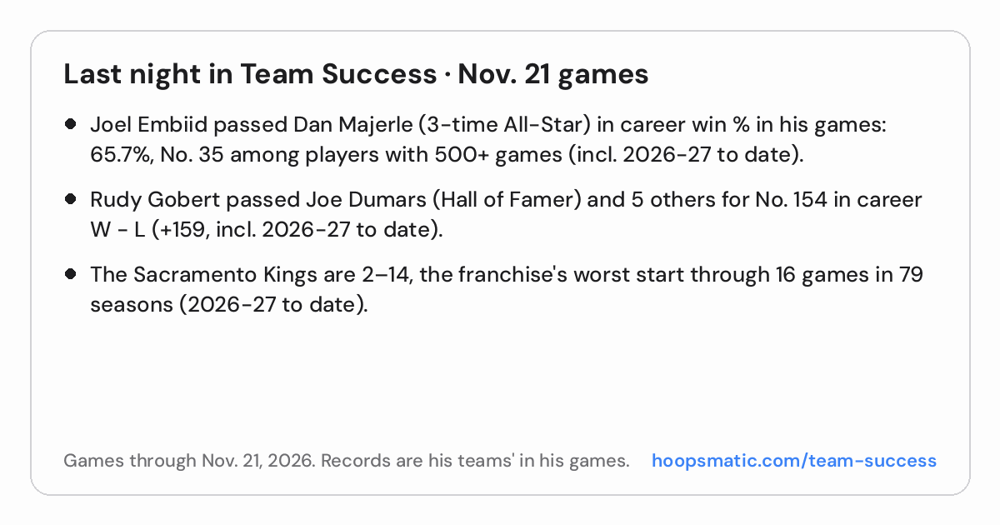

Last night in Team Success · Nov. 21 games
Nov. 22, 2026
 Joel Embiid passed Dan Majerle (3-time All-Star) in career win % in his games: 65.7%, No. 35 among players with 500+ games (incl. 2026-27 to date).
Joel Embiid passed Dan Majerle (3-time All-Star) in career win % in his games: 65.7%, No. 35 among players with 500+ games (incl. 2026-27 to date). Rudy Gobert passed Joe Dumars (Hall of Famer) and 5 others for No. 154 in career W − L (+159, incl. 2026-27 to date).
Rudy Gobert passed Joe Dumars (Hall of Famer) and 5 others for No. 154 in career W − L (+159, incl. 2026-27 to date). The Sacramento Kings are 2–14, the franchise's worst start through 16 games in 79 seasons (2026-27 to date).
The Sacramento Kings are 2–14, the franchise's worst start through 16 games in 79 seasons (2026-27 to date). The Milwaukee Bucks are 1–16, the franchise's worst start through 17 games in 59 seasons (2026-27 to date).
The Milwaukee Bucks are 1–16, the franchise's worst start through 17 games in 59 seasons (2026-27 to date). The Philadelphia 76ers are 14–3, the franchise's best start through 17 games since 2000-01 (14–3).
The Philadelphia 76ers are 14–3, the franchise's best start through 17 games since 2000-01 (14–3). Tonight vs the Washington Wizards: Paolo Banchero's teams are 12–3 (80.0%) in his 15 regular-season games against them (through 2025-26).
Tonight vs the Washington Wizards: Paolo Banchero's teams are 12–3 (80.0%) in his 15 regular-season games against them (through 2025-26). Tonight vs the Washington Wizards: Goga Bitadze's teams are 15–5 (75.0%) in his 20 regular-season games against them (through 2025-26).
Tonight vs the Washington Wizards: Goga Bitadze's teams are 15–5 (75.0%) in his 20 regular-season games against them (through 2025-26).
Nov. 22, 2026 · 6 games on Nov. 21, 2026 · each item is a template filled from the data and links to the row or games that prove it · earlier lists · the rules
